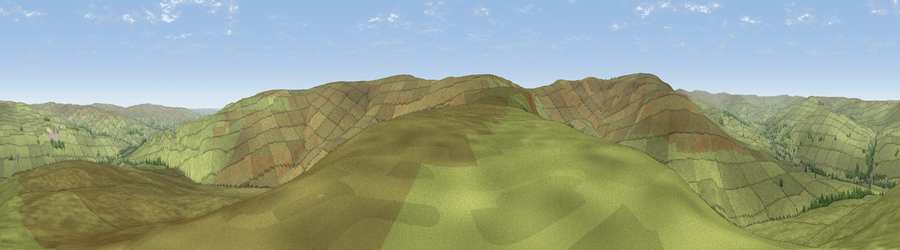

Viewpoint near Westgate
#13768 in England · top 40% of its area beats it · near Westgate · open accessWhere it is
The exact computed spot (NY 91225 35675). Click the marker for map links.
Public access: this spot lies on mapped open-access land (CRoW Act 2000) — you may roam here on foot. Computed from Natural England's CRoW access layer and OpenStreetMap rights of way — not the legal definitive map. Always verify locally.
The view, rendered

A 360° render of this exact spot computed from the terrain model, tree cover and land cover — summer colours, afternoon light, calibrated against photographs of famous viewpoints. Real trees, hedges and buildings will differ in detail.
The panorama
Grey silhouette: terrain skyline in each direction (720 bearings, Earth curvature and refraction included). Dashed green: skyline with trees (+15 m) and buildings (+8 m) as obstacles. Blue strip: how far the ground is visible on each bearing.
Where the view opens
Wedge length = distance to the farthest visible ground on that bearing (vegetation-aware). Rings at 10, 25 and 50 km.
What fills the view
98% grassland · 1% woodland
Angular shares of the visible panorama (visual magnitude), not map area. Landscape diversity 0.05 (0–1 Shannon).
Key numbers
More beautiful places nearby
The staircase of upgrades: each row has a higher view potential than everything closer. Driving times are estimates from straight-line distance, calibrated against real road routing — check an actual route before setting out.
| Place | Direction | Drive | Score |
|---|---|---|---|
| Viewpoint near Westgate | E · 3 km | ~8 min | 60.2 |
| Viewpoint near Daddry Shield | SW · 3 km | ~8 min | 67.0 |
| Viewpoint near Newbiggin | SSE · 4 km | ~10 min | 69.4 |
| Fendrith Hill | SW · 4 km | ~10 min | 70.0 |
| Viewpoint near Middleton-in-Teesdale | SE · 9 km | ~17 min | 70.5 |
| Collier Law | ENE · 12 km | ~22 min | 71.7 |
| Dead Stones | WNW · 13 km | ~23 min | 72.8 |
| Viewpoint near Allenheads | NW · 13 km | ~24 min | 74.6 |
54.71600, -2.13773 · source: screening · position refined by local search. Computed location — check access rights before visiting.